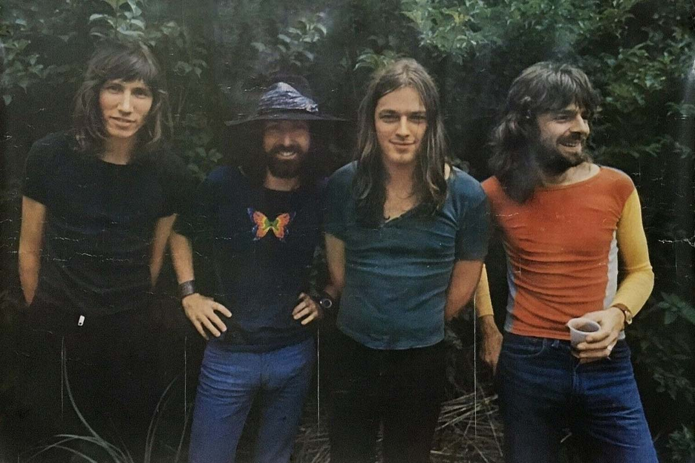

Integrantes
Syd Barrett (voz y guitarra)
Roger Waters (bajo y voz)

David Gilmour (guitarra y voz)
Richard Wright (teclados)
Nick Mason (batería)
Pink Floyd fue una de las bandas de rock más influyentes de la historia, conocida por su estilo psicodélico, letras filosóficas y espectáculos en vivo espectaculares.
Pink Floyd es una de las bandas más icónicas e influyentes en la historia del rock.
Se formó en Londres en 1965, inicialmente con Syd Barrett, Roger Waters, Richard Wright y Nick Mason.
Poco después, David Gilmour se uniría al grupo para reemplazar a Barrett, quien se retiró debido a problemas de salud mental.
Desde sus inicios, la banda destacó por un estilo experimental que combinaba el rock psicodélico, letras cargadas de filosofía y
presentaciones en vivo innovadoras con proyecciones visuales.

En sus primeros años, Pink Floyd se hizo conocido en la escena londinense gracias a sus conciertos llenos de improvisación
y su primer álbum, The Piper at the Gates of Dawn (1967), liderado creativamente por Syd Barrett.
Sin embargo, con la salida de Barrett, Roger Waters tomó el papel principal como compositor y letrista,
mientras David Gilmour aportaba con su inconfundible guitarra y voz.
Durante la década de 1970, la banda alcanzó su mayor reconocimiento. En 1973 lanzaron
The Dark Side of the Moon, un álbum conceptual que trataba temas como el tiempo, la locura,
el dinero y la muerte. Este disco se convirtió en uno de los más vendidos de la historia de la música,
permaneciendo más de 14 años en las listas de Billboard. Su sonido innovador, el uso de sintetizadores y
efectos sonoros marcaron un antes y un después en el rock progresivo.
En 1975 lanzaron Wish You Were Here, un homenaje a Syd Barrett,
donde se incluyen clásicos como “Shine On You Crazy Diamond”.
Dos años después, en 1977, publicaron Animals, un disco con fuertes críticas al sistema político y social.
Finalmente, en 1979 apareció The Wall, una de las obras más reconocidas de la banda,
que narra la historia de un músico aislado de la sociedad. Este álbum incluyó el famoso sencillo
“Another Brick in the Wall, Part II”.
Syd Barrett (voz y guitarra)
Roger Waters (bajo y voz)
David Gilmour (guitarra y voz)
Richard Wright (teclados)
Nick Mason (batería)